토목산업기사 (2011-10-02 기출문제)
1과목: 응용역학
1. 다음 그림과 같이 양단이 고정된 강봉이 상온에서 20℃만큼 온도가 상승했다면 강봉에 작용하는 압축력의 크기는? (단, 강봉의 단면적 A=50cm2, E=2.0×105kg/cm2, 열 팽창계수 α=1.0 × 10-5(1℃에 대해서)이다.)
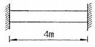
- 10 t
- 15 t
- 20 t
- 25 t
(정답률: 79%)

2. Euler 공식을 적용하는 양단 힌지인 장주에서 탄성계수 E = 210000kg/cm2, 단면폭 b = 15 cm, 단면높이 h = 30cm, 기둥길이 ℓ=18m 이다. 이때 최소 좌굴 하중 Pb값은?
- 1.4t
- 5.4t
- 10.8t
- 21.6t
(정답률: 30%)
3. 그림과 같이 단면의 폭이 b이고, 높이가 h인 단순보에서 발생하는 최대전단응력 τmax를 구하면?
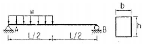
- wL/2bh
- 3wL/8bh
- 3wL/4bh
- 9wL/16h
(정답률: 45%)
4. 단면적 A=20cm2, 길이 L=50cm 인 강봉에 인장력 P=8t을 가하였더니 길이가 0.1mm 늘어났다. 이 강봉의 포아송수 m=3 이라면 전단탄성계수 G는 얼마인가?
- 750,000kg/cm2
- 75,000kg/cm2
- 250,000kg/cm2
- 25,000kg/cm2
(정답률: 29%)
5. 지름 d의 원형단면인 장주가 있다. 길이가 4m일 때 세장비율 100으로 하려면 적당한 지름 d는?
- 8 cm
- 10 cm
- 16 cm
- 18 cm
(정답률: 74%)
6. 그림과 같은 내민보에 대하여 지점 B에서의 처짐각을 구하면? (단, EI = 일정)
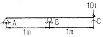
- 10/4EI
- 10/3EI
- 11/44EI
- 9/5EI
(정답률: 55%)
7. 3면 모멘트 방정식의 사용처로 가장 적당한 것은?
- 트러스 해석
- 연속보 해석
- 케이블 해석
- 아치 해석
(정답률: 49%)
8. 그림과 같이 중량이 500kg 되는 물체가 로프에 지지되어 있을 때, 줄 AB 및 BC에 작용하는 힘은?
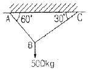
- AB=433kg, BC=220kg
- AB=433kg, BC=250kg
- AB=443kg, BC=220kg
- AB=443kg, BC=250kg
(정답률: 80%)
9. 그림과 같은 Truss에서 상현재 U의 부재력은 약 얼마인가?
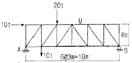
- 12.50 (압축)
- 15.84 (압축)
- 42.56 (압축)
- 52.52 (압축)
(정답률: 46%)
10. 트러스 해법에 대한 가정 중 틀린 것은?
- 각 부재는 마찰이 없는 힌지로 연결되어 있다.
- 절점을 잇는 직선은 부재축과 일치한다.
- 모든 외력은 절점에만 작용한다.
- 각 부재는 곡선재와 직선재로 되어 있다. 다.
(정답률: 78%)
11. 그림과 같은 보에서 C점의 전단력은?
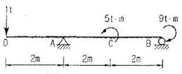
- -0.5t
- 0.5t
- -1t
- 1t
(정답률: 52%)
12. 다음 인장부재의 수직변위를 구하는 식은? (단, 탄성계수는 E)
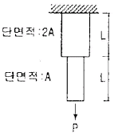
- PL/EA
- 3PL/2EA
- 2PL/EA
- 5PL/2EA
(정답률: 55%)
13. 다음의 그림과 같은 직사각형 단면의 단면계수는?
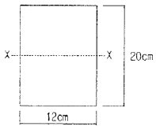
- 800cm3
- 1000cm3
- 1200cm3
- 1400cm3
(정답률: 85%)
14. 아래의 표에서 설명하는 것은? 탄성곡선상의 임의의 두 점 A와 B를 지나는 접선이 이루는 각은 두 점 사이의 휨모멘트도의 면적을 휨강도 EI로 나눈 값과 같다.
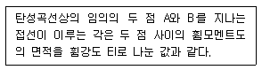
- 제 1공액보의 정리
- 제 2공액보의 정리
- 제 1 모멘트 면적 정리
- 제 2 모멘트 면적 정리
(정답률: 72%)
15. 재질 및 단면이 같은 다음의 2개의 외팔보에서 자유단의 처짐을 같게 하는 P1/P2의 값으로 옳은 것은?
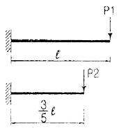
- 0.216
- 0.325
- 0.437
- 0.546
(정답률: 52%)
16. 다음 그림에서 등분포 하중이 작용할 때 지점 B의 연직반력은?
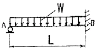
- WL/8
- 3WL/8
- WL/4
- 5WL/8
(정답률: 49%)
17. 그림과 같은 게르비보에서 A지점의 지점 모멘트(MA)는?
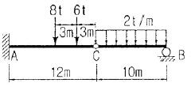
- -222t·m
- +222t·m
- -182t·m
- +182t·m
(정답률: 39%)
18. 그림과 같은 직사각형 단면에 전단력 S=4.5t이 작용할 때 중립축에서 5cm 떨어진 a-a면에서의 전단응력은?
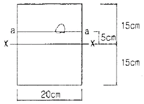
- 7kg/cm2
- 8kg/cm2
- 9kg/cm2
- 10kg/cm2
(정답률: 82%)
19. 등분포하중을 받는 직사각형단면의 단순보에서 최대 처짐에 대한 설명으로 옳은 것은?
- 보의 폭에 비례한다.
- 지간의 3제곱에 반비례한다.
- 탄성계수에 반비례한다.
- 보의 높이의 제곱에 비례한다.
(정답률: 75%)
20. 그림과 같은 단면의 x축에 대한 단면 1차 모멘트는 얼마인가?
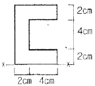
- 128cm3
- 136cm3
- 148cm3
- 155cm3
(정답률: 76%)
2과목: 측량학
21. 축척이 1 : 25000인 지형도 1매를 1 : 5000 축척으로 재편집할 때 제작되는 지형도의 매 수는?
- 5매
- 10매
- 15매
- 25매
(정답률: 80%)
22. 등고선과 지성선에 대한 설명으로 옳지 않은 것은?
- 등경사면에서는 등간격으로 표현 된다.
- 최대 경사선과 등고선은 반드시 직교한다.
- 철(凸)선은 빗물이 이 선을 향하여 모여 흐르므로 합수선이라고도 한다.
- 등고선은 절벽이나 동굴 등 특수한 지형 외에는 합쳐지거나 또는 교차하지 않는다.
(정답률: 59%)
23. 클로소이드 매개변수 A=60m 이고 곡선길이 L=30m 인 클로소이드의 곡률반경 R은?
- 60m
- 80m
- 100m
- 120m
(정답률: 84%)
24. 그림과 같이 ΔABC의 토지를 한변 BC에 평행한 DE로 분할하여 면적의 비율이 ΔADE : □BCED = 2 : 3이 되게 하려고 한다면 AD의 길이는? (단, AB의 길이는 50m)
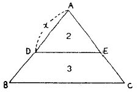
- 32.52m
- 31.62m
- 30m
- 20m
(정답률: 74%)
25. 기지점 A로부터 기지점 B에 결합하는 트래버스 측량을 실시하였다. X좌표의 결합차 +0.15m, Y좌표의 결합차 +0.20m을 얻었다면 이 측량의 결합비는? (단, 전체 노선 거리는 2750m이다)
- 1/11000
- 1/14000
- 1/16000
- 1/18000
(정답률: 85%)
26. 교각이 90˚인 두 직선사이에 외할(E)을 30m 로 취하는 곡선을 설치하고자 할 때 적당한 곡선 반지름은?
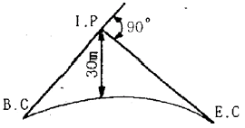
- 75.43m
- 72.43m
- 65.43m
- 61.43m
(정답률: 36%)
27. 항공사진의 원리와 부합되는 투영방법은?
- 정사투영
- 중심투영
- 평행투영
- 등각투영
(정답률: 63%)
28. 노선측량의 순서로 옳은 것은?
- 도상 계획 - 예측 - 실측 - 공사 측량
- 예측 - 도상 계획 - 실측 - 공사 측량
- 도상 계획 - 실측 - 예측 - 공사 측량
- 예측 - 공사 측량 - 도상 계획 - 실측
(정답률: 75%)
29. 하천의 수위표 설치 장소로 적당하지 않은 곳은?
- 상·하류가 곡선으로 연결되어 유속이 크지 않은 곳
- 수위가 교각 등의 영향을 받지 않는 곳
- 홍수시 쉽게 양수표가 유실되지 않는 곳
- 하상과 하안이 세굴이나 퇴적이 되지 않는 곳
(정답률: 73%)
30. 평판을 설치할 때 오차에 가장 큰 영향을 주는 것은 무엇인가?
- 수평맞추기(정준)
- 중심맞추기(구심)
- 방향맞추기(표정)
- 높이맞추기(표고)
(정답률: 75%)
31. 단곡선 설치에서 교각이 60˚이고 곡선반지름이 500m이면 접선길이는?
- 250.000m
- 288.675m
- 523.598m
- 866.025m
(정답률: 75%)
32. 촬영고도 3500m에서 촬영한 편위 수정 사진에서 지상연직점으로부터 500m인 곳에 비고 1300m의 산꼭 대기는 몇 mm 변위로 찍혀지는가? (단, 축척은 1/25000이다.)
- 약 5.4mm
- 약 7.4mm
- 약 9.4mm
- 약 10.4mm
(정답률: 37%)
33. 다음 설명 중 옳지 않은 것은?
- 측지측량은 지구의 곡률을 고려하지 않는 측량으로 반경 11km이내는 평면으로 취급한다.
- 기하학적 측지학에서는 천문측량, 위성측지 등이 있다.
- 물리학적 측지학에서는 지구의 형상 해석, 중력측 정, 지자기측정 등이 있다.
- 측지학이란 지구의 형상, 지구표면에 있는 점들 사이의 상호 위치관계를 결정하는 학문이다.
(정답률: 57%)
34. 삼각측량의 특징에 대한 설명으로 옳지 않은 것은?
- 넓은 면적의 측량에 적합하다.
- 각 단계에서 정확도를 점검할 수 있다.
- 삼각점간의 거리를 비교적 길게 취할 수 있다.
- 산지 등 기복이 많은 곳보다는 평야지대와 산림지역에 적합하다.
(정답률: 56%)
35. 천체의 고도, 방위각, 시각을 관측하여 관측지점의 경위도 및 방위를 구하는 측량은?
- 지형측량
- 평판측량
- 스타디아 측량
- 천문측량
(정답률: 75%)
36. 트래버스(Traverse) 측량 결과에서 결측된 BC의 거리를 구한 값은? (단, 오차는 없는 것으로 한다)
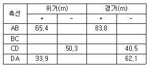
- 26.68m
- 35.58m
- 43.58m
- 52.48m
(정답률: 43%)
37. 삼각측량 시 노선측량, 하천측량, 철도측량 등에 많이 사용하며 동일한 도달거리에 대하여 측점 수가 가장 적으므로 측량이 간단하고 경제적이나 정확도가 낮은 삼각망은?
- 사변형 삼각망
- 유심 삼각망
- 기선 삼각망
- 단열 삼각망
(정답률: 74%)
38. 그림에서 B점의 지반고는? (단, HA = 39.695m)
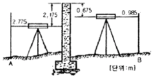
- 39.4⑤m
- 39.985m
- 42.985m
- 46.3⑤m
(정답률: 80%)
39. 수준측량에서 전시와 후시의 거리를 같게 하여도 제거되지 않는 오차는?
- 시준선과 기포관축이 평행하지 않을 때 생기는 오차
- 표척 눈금의 읽음오차
- 광선의 굴절오차
- 지구곡률 오차
(정답률: 82%)
40. 직각좌표 상에서 각 점의 (x, y)좌표가 A(-4, 0), B(-8, 6), C(9, 8), D(4, 0)인 4점으로 둘러싸인 다각형의 면적은? (단, 좌표의 단위는 m이다)
- 87m2
- 100m2
- 174m2
- 192m2
(정답률: 64%)
3과목: 수리학
41. Dupuit의 침윤선(浸潤線) 공식의 유량은? (단, 직사각형 단면 제방 내부의 투수인 경우이며, 제방의 저면은 불투수층이고 q:단위폭당 유량, L : 침윤거리, h1, h2 : 상하류의 수위, k : 투수계수)
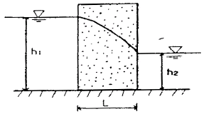
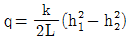
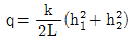
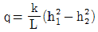
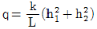
(정답률: 61%)
42. 개수로 흐름에서 수심이 1m, 유속이 2m/sec 이라면 흐름의 상태는?
- 상류(常流)
- 난류(暖流)
- 층류(層流)
- 사류(射流)
(정답률: 67%)
43. 반지름이 R인 수평 원관 내를 물이 층류로 흐를 경우 Hagen-Poiseuille의 법칙에서 유량 Q에 대한 설명으로 옳은 것은? (여기서, ω : 물의 단위 질량, ℓ : 관의 길이, hL : 손실수두, μ : 점성계수)
- 반지름 R인 원관에서 유량
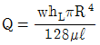
이다. - 유량과 압력차 Δ 와의 관계에서
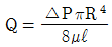
이다. - 유량과 동수경사 I와의 관계에서
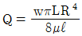
이다. - 반지름 R대신에 지름 D이면 유량
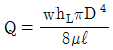
이다.
(정답률: 64%)
44. 절대속도 U[m/sec]로 움직이고 있는 판에 같은 방향으로부터 절대속도 V[m/sec]의 분류가 흐를 때 판에 충돌하는 힘을 계산하는 식으로 옳은 것은? (단, ω0는 물의 단위중량, A는 통수 단면적)
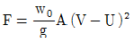
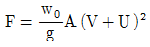
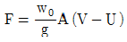
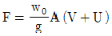
(정답률: 65%)
45. Darcy 의 법칙을 지하수에 적용시킬 때 가장 잘 일치하는 흐름은?
- 층류(層流)
- 난류(暖流)
- 사류(射流)
- 상류(常流)
(정답률: 87%)
46. 개수로 내의 흐름에서 수심 h, 유수단면적 A, 유량 Q, 비에너지 He라고 할 때 에너지 보정계수 α=1이라면 이들의 관계식으 옳은 것은?
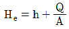
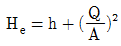
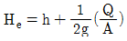
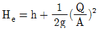
(정답률: 43%)
47. 그림과 같은 직사각형 위어(Weir)의 유량(월류량)을 프란시스(Francis)의 공식에 의하여 구한 값은? (단, 양단수축이며, 접근유속은 무시한다)
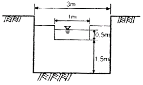
- 0.732m3/sec
- 0.327m3/sec
- 0.632m3/sec
- 0.585m3/sec
(정답률: 35%)
48. 도수(跳水)가. 15m 폭의 수문 하류측에서 발생되었다. 도수가 일어나기 전의 깊이가 1.5m이고, 그 때의 유속은 18m/sec이었다면 도수로 인한 에너지 손실수두는? (단, 에너지 보정계수 α=1이다)
- 8.3m
- 7.6m
- 5.4m
- 3.2m
(정답률: 18%)
49. 불안정한 층류상태인 천이영역이 발생하는 원인은 무엇인가?
- 마찰
- 점성
- 중력
- 관성
(정답률: 39%)
50. 내경 30cm의 관로에서 속도수두가 관 벽에 의한 마찰손실수두와 같다면 이 관로의 길이는? (단, f = 0.03이다)
- 8m
- 10m
- 12m
- 14m
(정답률: 56%)
51. 30t의 철근 콘크리트가 물속에 있을 때의 무게는? (단, 철근콘크리트의 비중은 2.4이다)
- 12.5t
- 15.7t
- 17.5t
- 19.7t
(정답률: 13%)
52. 사각형단면 개수로의 수리학적으로 유리한 단면에서 수로의 수심이 3m이었다면 이 수로의 경심은?
- 3.0m
- 1.5m
- 1.0m
- 0.75m
(정답률: 66%)
53. 모세관 현상에 관한 설명으로 옳지 않은 것은?
- 모세관의 상승높이는 액체의 응집력과 액체와 관벽의 부착력에 의해 좌우된다.
- 액체의 응집력이 관 벽과의 부착력보다 크면 관내의 액체의 높이는 관 밖의 액체보다 낮게 된다.
- 모세관의 상승높이는 모세관의 직경 d에 반비례한다.
- 모세관의 상승높이는 액체의 단위중량에 비례한다.
(정답률: 66%)
54. 그림과 같은 작은 오리피스에서 유속은? (단, 유속계Tn Cv는 0.9이다)
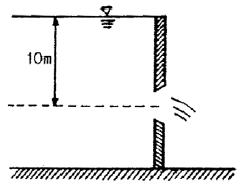
- 8.9m/sec
- 9.9m/sec
- 12.6m/sec
- 14.0m/sec
(정답률: 66%)
55. 유체의 점성(viscosity)에 대한 설명으로 옳은 것은?
- 점성계수는 전단응력(τ)을 속도 경사(∂v/∂y)로 나눈 값이다.
- 동점성계수는 점성계수에 밀도를 곱한 값이다.
- 액체의 경우 온도가 상승하면 점성도 함께 커진다.
- 유체의 비중을 알 수 있는 척도이다.
(정답률: 63%)
56. 수면 아래 20m 지점의 수압은 몇 kg/cm2 인가?
- 1.03kg/cm2
- 2kg/cm2
- 20kg/cm2
- 200kg/cm2
(정답률: 50%)
57. 그림과 같은 벤츄리미터(venturi meter)를 이용하여 관내를 흐르는 실제 유량을 측정할 경우에 적합한 공식은? (단, U 자관 내의 수은의 비중은 s이고, C는 유량계수이다)
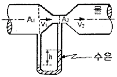
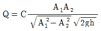
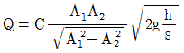
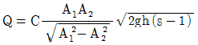
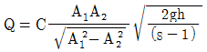
(정답률: 46%)
58. 도수(hydraulic jump)에 대한 설명으로 옳은 것은?
- 수로의 곡선부에 있어서 요안(凹岸)측으로 수면이 상승하는 현상
- 사류에서 상류로 변할 때 수면이 불연속적으로 뛰어오르는 현상
- 정수면의 외부충격에 의한 표면파의 전파현상
- 수로를 갑자기 막았을 때 수면상승이 상류로 전파되는 현상
(정답률: 74%)
59. Manning의 조도계수 n과 Chezy 의 계수 C와의 관계로 옳은 것은? (여기서 R : 경심)
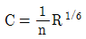
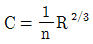
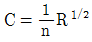
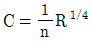
(정답률: 68%)
60. 피토관(Pitot tube)로 유속을 측정할 때, 유속공식으로 옳은 것은?
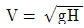
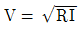
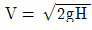
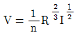
(정답률: 72%)
4과목: 철근콘크리트 및 강구조
61. 하중재하 기간이 5년이 넘은 경우 장기 처짐량은 얼마인가?(단, 단기의 순간탄성처짐량은 30mm이고, 이 보는 단순부재로서 중앙단면의 압축철근비는 ρ′는 0.02 이다.)
- 10mm
- 30mm
- 40mm
- 60mm
(정답률: 63%)
62. 휨부재에서 fck=28MPa, fy=400MPa일 때 인장철근 D29(공칭지름 28.6mm, 공칭단면적 642mm2)의 기본정착길이(ldb)는 약 얼마인가?
- 1200mm
- 1250mm
- 1300mm
- 1350mm
(정답률: 83%)
63. 그림과 같이 경간 20m인 PSC 보가 프리스트레스 힘(P) 1000kN을 받고 있을 때 중앙단면에서의 상향력 (U)을 구하면?
- 20kN
- 30kN
- 40kN
- 50kN
(정답률: 58%)
64. 전체 깊이가 900mm를 초과하는 휨부재 복부의양 측면에 부재 축방향으로 배근하는 철근의 명칭은?
- 배력철근
- 표피철근
- 피복철근
- 연결철근
(정답률: 82%)
65. 그림과 같은 T형보에서 fck = 21MPa, fy = 400MPa, As = 3212mm2일 때 공칭 휨강도(Mn)는?
- 463.7 kN∙m
- 521.6 kN∙m
- 578.4 kN∙m
- 613.5 kN∙m
(정답률: 67%)
66. 단철근 직사각형보를 강도설계법으로 균형보로 설계할 때 콘크리트의 압축측 연단에서 중립축까지의 거리가 250mm이고, 콘크리트 설계기준 강도(fck)가 28MPa이라면, 등가응력 직사각형 깊이(a)는 얼마인가?
- 210.7mm
- 212.5mm
- 215.3mm
- 221.2mm
(정답률: 72%)
67. 보의 길이 ℓ = 30m, 활동량 △ℓ = 3mm, 긴장재의 탄성계수(Ep) = 200000 MPa 일 때 프리스트레스 감소량 △fp는? (단, 일단 정착임)
- 40 MPa
- 15 MPa
- 30 MPa
- 20 MPa
(정답률: 38%)
68. 폭이 400mm 이고 유효깊이가 60mm 인 철근콘크리트 직사각형 보에서 전단력과 휨모멘트만을 받는 경우 콘크리트가 받을 수 있는 전단강도 Vc는 얼마인가? (단. fck=28MPa, fy=400MPa)
- 143.4kN
- 158.3kN
- 199.7kN
- 211.7kN
(정답률: 72%)
69. 강판을 리벳 이음할 때 지그재그(zigzag)형으로 리벳을 배치할 경우 재편의 순폭은 최초의 리벳구멍에 대하여 그 지름을 빼고 다음 것에 대하여는 다음 중 어느 식을 사용하여 빼주는가? (단, g : 리벳선간거리, p : 리벳의 피치)
(정답률: 67%)
70. 콘크리트 설계기준강도가 24MPa, 철근의 항복강도가 300MPa로 설계된 지간 5m인 단순지지 1방향슬래브가 있다. 처짐을 계산하지 않는 경우의 최소 두께는?
- 200mm
- 215mm
- 250mm
- 500mm
(정답률: 50%)
71. 전단철근이 부담하는 전단력 Vs=200kN일 때, D13 철근을 사용하여 수직스터럽으로 전단보강하는 경우 배치간격은 최대 얼마 이하로 하여야 하는가? (단, fck=28MPa, D13의 단면적은 127mm2, fy=400MPa, bw=400mm, d=600mm)
- 600mm
- 300mm
- 255mm
- 175mm
(정답률: 58%)
72. 철근콘크리트 부재에 사용하는 전단철근으로 적합하지 않는 것은?
- 부재축에 직각인 스터럽
- 부재축에 직각으로 배치한 용접철망
- 주인장 철근에 30°의 각도로 설치되는 스터럽
- 주인장 철근에 30°의 각도로 구부린 굽힘철근
(정답률: 68%)
73. 다음 스리스트레스의 손실 원인 중 프리스트레스 도입 후 시간의 경과에 따라 생기는 것은?
- 마찰
- 정착단의 활동
- 콘크리트의 크리프
- 콘크리트의 탄성수축
(정답률: 73%)
74. 강도 설계법에 의해 보를 설계할 때 압축측 연단에서의 콘크리트의 최대 변형률은 얼마로 가정하는가?
- 0.001
- 0.002
- 0.003
- 0.004
(정답률: 76%)
75. 강도 설계법에서 균형단면의 단철근 직사각형보의 중립축의 위치 c값을 구하는 식으로 옳은 것은? (단, d : 보의 유효깊이, fy : 철근의 설계기준항복강도, fs : 철근의 응력)
(정답률: 76%)
76. 나선철근과 띠철근 기중에서 종방향 철근의 순간격이 옳게 설명된 것은?
- 40mm 이상, 또한 철근 공칭지름의 1.5배 이상으로 하여야 한다.
- 50mm 이상, 또한 철근 공칭지름 이상을 하여야한다.
- 50mm 이하, 또한 철근 공칭지름의 1.5배 이하로 하여야 한다.
- 40mm 이하, 또한 철근 공칭지름 이하로 하여야한다.
(정답률: 64%)
77. PSC의 설계 개념 중에서 포물선으로 배치된 PS강재에 의해 생긴 상향력이 보에 상향으로 작용하는 하중과 같다고 간주하는 설계 개념을 무엇이라고 하는 가?
- 응력개념
- 강도개념
- RC개념
(정답률: 60%)
78. 옹벽구조해석 및 설계에 관한 설명 중 틀린 것은?
- 부벽식 옹벽의 추가철근은 3변 지지된 2방향 슬래브로 설계할 수 있다.
- 부벽식 옹벽의 저판은 부벽간의 거리를 경간으로 가정한 고정보 또는 연속보로 설계할 수 있다.
- 뒷부벽과 앞부벽은 T형보로 설계하여야 한다.
- 캔틸레버식 옹벽의 저판은 추가철근과의 접합부를 고정단으로 간주한 캔틸레버로 가정하여 단면을 설계할 수 있다.
(정답률: 81%)
79. 그림과 같은 판형(Plate Girder)의 각부 명칭으로 틀린 것은?
- A - 상부판(Flange)
- B - 보강재(Stiffener)
- C - 덮개판(Cover plate)
- D - 횡구(Bracing)
(정답률: 88%)
80. 깊은 보는 주로 어느 작용에 의하여 전단력에 저항하는가?
- 장부작용(dowel action)
- 골재 맞물림(aggregate interaction)
- 전단마찰(shear friction)
- 아치작용(arch action)
(정답률: 81%)
5과목: 토질 및 기초
81. 흙의 분류방법 중 통일분류법에 대한 설명으로 틀린 것은?
- #200(0.075mm)체 통과율이 50%보다 작으면 조립토이다.
- 조립토 중 #4(4.75mm)체 통과율이 50%보다 작으면 자갈이다.
- 세립토에서 압축성의 높고 낮음을 분류할 때 사용하는 기준은 액성한계 35% 이다.
- 세립토를 여러 가지로 세분하는 데는 액성한계와 소성지수의 관계 및 범위를 나타내는 소성도표가 사용된다.
(정답률: 62%)
82. 내부마찰각 φ=0°인 점토에 대하여 일축압축 시험을 하여 알축압축 강도 qu = 3.2kg/cm2을 얻었다면 점착력 c는?
- 1.2kg/cm2
- 1.6kg/cm2
- 2.2kg/cm2
- 6.4kg/cm2
(정답률: 75%)
83. 두께 5m인 점토층에서 시료를 채취하여 압밀시험을 실시한 결과, 하중강도를 3kg/cm2에서 4kg/cm2으로 증가시켰을 때 간극비는 1.9에서 1.6으로 감소하였다. 이 점토층의 압밀침하량은?
- 51.7cm
- 42.5cm
- 43.8cm
- 57.2cm
(정답률: 45%)
84. 영공기간극곡선(zero air void cure)은 다음 중 어떤 토질시험 결과로 얻어지는가?
- 액성한계시험
- 다짐시험
- 직접전단시험
- 압밀시험
(정답률: 56%)
85. 연약지반 개량공법 중에서 일시적인 공법에 속하는 것은?
- Sand drain공법
- 지환공법
- 약액주입공법
- 동결공법
(정답률: 68%)
86. 다음 중 동상의 방지 대책으로 옳지 않은 것은?
- 모관수의 상승을 차단한다.
- 도로포장의 경우 보조기층아래 동결작용에 민감하지 않는 모래 또는 자갈층을 둔다.
- 동결심도 대상 깊이의 재료를 모관 상승고가 큰 재료로 치환한다.
- 구조물기초는 동결피해가 없도록 동결깊이 아래에 설치한다.
(정답률: 55%)
87. 직접전단시험에서 수직응력이 10kg.cm2일 때 전단 저항이 5kg/cm2이었고, 수직응력을 20kg/cm2로 증가하였더니 전단저항이 7kg/cm2 이었다. 이 흙의 점착력 값은?
- 2kg/cm2
- 3kg/cm2
- 5kg/cm2
- 7kg/cm2
(정답률: 59%)
88. 다음 그림에서 X -X 단면에 작용하는 유효응력은?
- 4.26t/m2
- 5.24t/m2
- 6.36t/m2
- 7.21t/m2
(정답률: 76%)
89. 포화단위 중량이 1.8t/m3인 모래지반이 있다. 이 포화모래지반에 침투수압의 작용으로 모래가 분출하고 있다면 한계동수경사는 얼마인가?
- 0.8
- 1.0
- 1.8
- 2.0
(정답률: 57%)
90. 어느 흙의 자연함수비가 그 흙의 액성한계보다 높다면 그 흙은 어떤 상태인가?
- 소성상태에 있다.
- 액체상태에 있다.
- 반고체상태에 있다.
- 고체상태에 있다.
(정답률: 64%)
91. 다음 중 직접전단시험의 특징이 아닌 것은?
- 배수조건에 대한 완벽한 조절이 가능하다.
- 시료의 경계에 응력이 집중된다.
- 전단면이 미리 정해진다.
- 시험이 간단하고 결과 분석이 빠르다.
(정답률: 61%)
92. 분할법으로 사면안정 해석시에 가장 먼저 결정되어야 할 사항은?
- 분할 세편의 중량
- 활동면상의 마찰력
- 가상 활동면
- 각 세편의 간극수압
(정답률: 80%)
93. 모래질 지반에 30cm×30cm 크기의 평판으로 재하 시험을 한 결과 15t/m2의 극한 지지력을 얻었다. 2m×2m의 기초를 설치할 때 기대되는 극한 지지력은?
- 100t/m2
- 50t/m2
- 30t/m2
- 22.5t/m2
(정답률: 50%)
94. 말뚝의 평균 지름이 140cm, 관입깊이 15m일 때 군말뚝의 영향을 고려하지 않아도 되는 말뚝의 최소 간격은?
- 약 3m
- 약 5m
- 약 7m
- 약 9m
(정답률: 46%)
95. 아래 그림과 같은 옹벽에 작용하는 전주동토압을 구하면?
- 9.32t/m
- 16.25t/m
- 18.64t/m
- 20.42t/m
(정답률: 33%)
96. 전체 시추코아 길이가 200cm 이고, 이 중 회수된 코아 길이의 합이 83cm, 10cm 이상인 코아 길이의 합이 70cm였다면 코아 회수율 (TCR)은?
- 35.0%
- 41.5%
- 51.5%
- 65.0%
(정답률: 40%)
97. Terzaghi의 지지력 공식에서 고려되지 않는 것은?
- 흙의 내부 마찰각
- 기초의 근입깊이
- 압밀량
- 기초의 폭
(정답률: 57%)
98. 토질조사 방법 중 Sounding에 대한 설명으로 옳은 것은?
- 표준관입시험(S.P.T)은 정적인 Sounding방법이다.
- Sounding은 Boring이나 시굴보다도 확실하게 지반 구성을 알 수 있다.
- Sounding은 원위치 시험으로서 의의가 있으며 예비조사에 많이 사용된다.
- 동적인 Sounding방법은 주로 점성토 지반에서 사용된다.
(정답률: 49%)
99. 유선망(flow net)을 이용하여 구할 수 있는 것이 아닌 것은?
- 투수계수
- 간극수압
- 동수경사
- 침투수량
(정답률: 67%)
100. 다짐에 관한 다음 사항 중 옳지 않은 것은?
- 최대 건조단위 중량은 사질토에서 크고 점성토 일수록 작다.
- 다짐 에너지가 클수록 최적 함수비는 커진다.
- 양입도에서는 빈입도 보다 최대 건조단위중량이 크다.
- 다짐에 영향을 주는 것은 토질, 함수비, 다짐방법 및 에너지 등이다.
(정답률: 81%)
6과목: 상하수도공학
101. 다음의 수원 중에서 일반적으로 오염가능성이 가장 높은 것은?
- 천층수
- 지표수
- 복류수
- 심층수
(정답률: 54%)
102. 분류식 하수배제 방식에 대한 설명으로 옳은 것은?
- 분류식은 우수토실을 반드시 설치하여야 한다.
- 분류식은 위생적 측면에서 우수하나 관거 부설비가 많이 든다.
- 분류식은 관의 단면적이 커지게 되어 관내 검사가 용이하다.
- 분류식은 오수와 우수를 하수처리장으로 동시에 보내는 방식이다.
(정답률: 59%)
103. 어느 도시의 인구가 500000명이고, 1인당 폐수 발생량이 300L/day, 1인당 배출 BOD가 60g/day인 경우, 발생 폐수의 BOD 농도는?
- 150mg/L
- 200mg/L
- 250mg/L
- 300mg/L
(정답률: 55%)
104. 하수처리 방법 중 물리적 처리방법이 아닌 것은?
- 침전
- 여과
- 흡착
- 환원
(정답률: 60%)
1⑤. 하수 관거의 연결방법이 아닌 것은?
- 관정 연결
- 소켓 연결
- 맞대기 연결
- 맞물림 연결
(정답률: 33%)
106. 하수도의 구성에 대한 설명으로 옳지 않은 것은?
- 배제방식은 합류식과 분류식으로 대별할 수 있다.
- 지역이 광대한 대도시에서는 배수계통 형식 중 선형식이 가장 적합하다.
- 처리시설은 물리적, 생물학적, 화학적시설로 대별 할 수 있다.
- 집배수 시설은 자연유하식이 원칙이나 펌프시설도 필요하다.
(정답률: 50%)
107. 정수시설 중 급속여과지의 여과모래에 대한 기준으로 옳지 않은 것은?
- 유효경은 0.45~1.0mm 중에서 적정한 입경을 선정하여 사용한다.
- 균등계수는 1.0 이하이어야 한다.
- 최대경은 2.0mm를 넘지 않아야 한다.
- 마모율은 3% 이하이어야 한다.
(정답률: 34%)
108. 접합정이 반드시 설치되어야 할 장소로 틀린 것은?
- 관로의 분기점
- 고개의 정상부
- 정수압의 조정이 필요한 곳
- 동수경사의 조정이 필요한 곳
(정답률: 58%)
109. 하수도에 사용되는 관거에 요구되는 특성으로 틀린 사항은?
- 파괴에 대한 저항력이 클 것
- 조도계수가 클 것
- 이음의 시공이 용이할 것
- 중량이 작을 것
(정답률: 71%)
110. 폭 3m, 길이 20m, 유효수심 4m의 침전지에서 2000m3/day의 물을 침전 처리할 때 표면적 부하는 얼마인가?
- 166.7 m3/m2∙day
- 33.3 m3/m2∙day
- 25.0 m3/m2∙day
- 8.3 m3/m2∙day
(정답률: 43%)
111. 수질검사에서 대장균을 검사하는 이유는?
- 대장균이 병원체이므로
- 물을 부패시키는 세균이므로
- 수질오염을 가져오는 대표적인 세균이므로
- 대장균을 이용하여 다른 병원체의 존재를 추정하기 위하여
(정답률: 83%)
112. 오수관거 설계시의 계획시간최대오수량에 대한 유속범위로 옳은 것은?
- 0.6 ~ 3m/sec
- 0.1 ~ 1m/sec
- 0.6 ~ 0.8m/sec
- 0.1 ~ 0.5m/sec
(정답률: 60%)
113. 호기성 생물처리법을 분류할 때, 활성슬러지법의 일종이 아닌 것은?
- 점강포기법
- 접촉산화법
- 산화구법
- 장기포기법
(정답률: 36%)
114. 수격방지 대책 중에서 압력저하에 따른 부압방지 대책으로 설치하는 것이 아닌 것은?
- 조압수조(surge tank)
- 플라이 휠(fly wheel)
- 안전밸브(safety valve)
- 에어챔버(air chamber)
(정답률: 47%)
115. 오니(sludge) 처리에 관한 설명 중 틀린 것은?
- 하수 오니는 매우 높은 함수율과 부패성을 갖고 있다.
- 오니의 농축은 오니의 체적감소 과정으로 보통 오니 소화의 전단계 공정이다.
- 호기성 소화는 오니의 소화방법이 아니다.
- 오니의 기계탈수 종류로는 진공여과기, 가압여과 기, 원심분리기 등이 있다.
(정답률: 74%)
116. 다음 중 염소소득시 소독력에 가장 큰 영향을 미치는 수질인자는?
- pH
- 탁도
- 총 경도
- 알칼리도
(정답률: 69%)
117. 집수매거에 대한 설명으로 옳은 것은?
- 집수매거 경사는 될 수 있으며 1/100 이상의 급경사로 하는 것이 좋다.
- 집수매거의 유출단에서 매거내의 평균유속은 3m/s이하로 한다.
- 호소수, 저수지수와 같은 지표수를 취수하기 위한 시설이다.
- 매설은 복류수의 흐름방향에 대하여 가능한 직각으로 설치하는 것이 효율적이다.
(정답률: 30%)
118. 슬러지의 함수율이 95%에서 90%로 저하되었다. 이 때 전체 슬러지의 부피는 어떻게 되는가? (단, 슬러지의 비중은 1.0 으로 한다.)
- 1/2로 감소한다.
- 1/3로 감소한다.
- 1/4로 감소한다.
- 1/5로 감소한다.
(정답률: 64%)
119. 마을 전체의 수압을 안정시키기 위해서는 급수탑 바로 밑의 관로 계기수압이 3.5kg/cm2 가 되어야 한다. 이를 만족시키기 위하여 급수탑은 관로로부터 몇 m 높이에 수위를 유지하여야 하는가?
- 35m
- 25m
- 15m
- 5m
(정답률: 52%)
120. 하천에 오수가 유입될 때 하천의 자정작용 중 최초의 분해지대에서 BOD가 감소하는 주원인은?
- 유기물의 침전
- 탁도의 증가
- 온도의 변화
- 미생물의 번식
(정답률: 80%)
ΔL = LαΔT
여기서 L은 강봉의 길이, α는 열 팽창계수, ΔT는 온도 변화량이다. 따라서,
ΔL = 1000cm × 1.0 × 10^-5 (1/℃) × 20℃ = 2cm
강봉의 길이 변화량이 2cm이므로, 이에 따른 압축력 F는 다음과 같이 구할 수 있다.
F = EAΔL/A
여기서 E는 탄성계수, A는 강봉의 단면적이다. 따라서,
F = 2.0 × 10^5 (kg/cm^2) × 50 (cm^2) × 2 (cm) / 1000 (kg) = 10 t
따라서, 강봉에 작용하는 압축력의 크기는 10 t이다. 따라서 정답은 "10 t"이다.